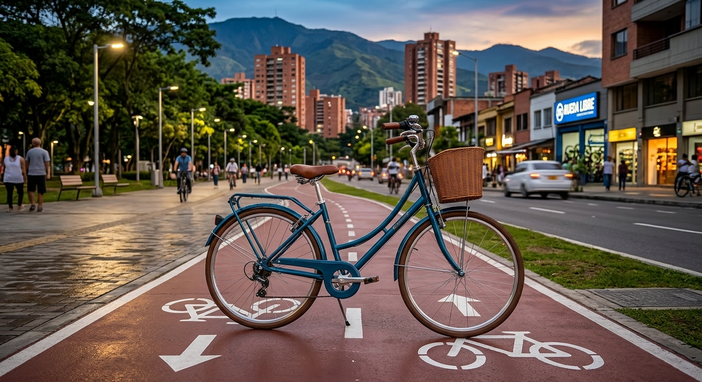
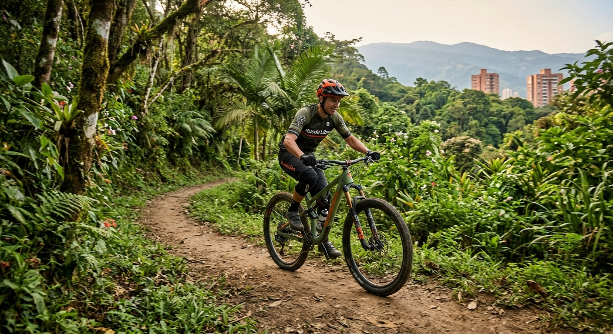
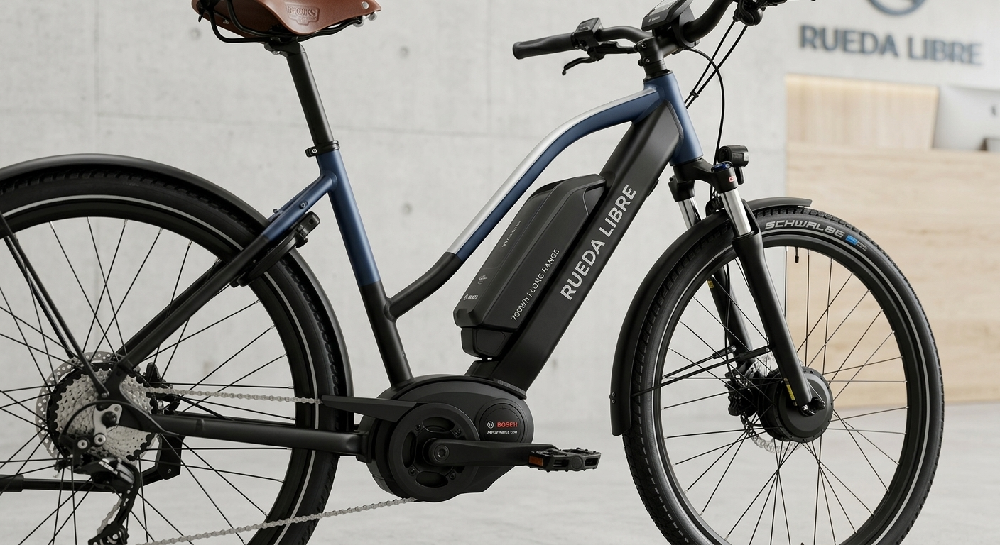
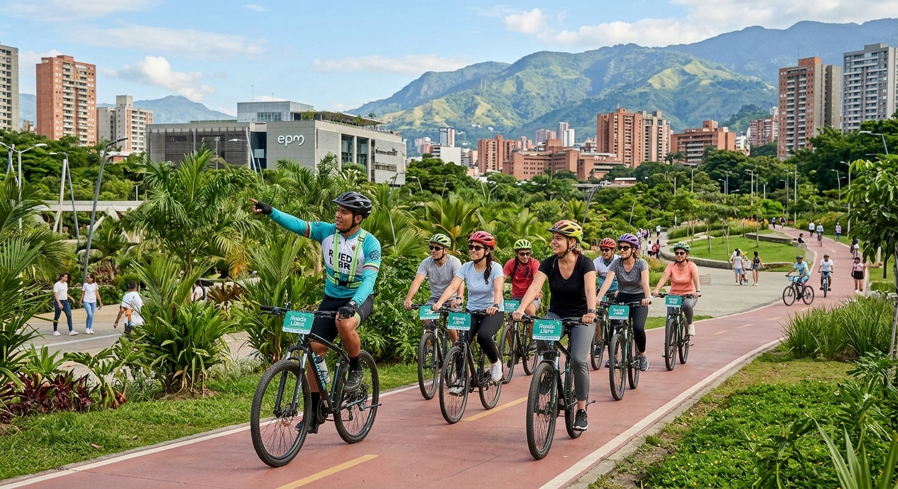
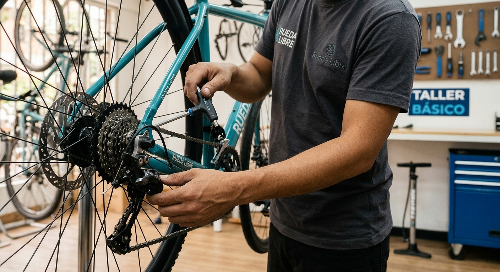

Alquiler de bicicletas urbanas
Recorre la ciudad, visita sus espacios públicos y disfruta de una alternativa práctica para movilizarte.
Ideal para: paseos urbanos y recorridos tranquilos.
Consultar tarifasAlquiler de bicicletas en Medellín para descubrir la ciudad, disfrutar de la naturaleza y vivir nuevas aventuras.

En Rueda Libre creemos que la bicicleta es una excelente forma de descubrir Medellín, cuidar el medio ambiente y disfrutar cada recorrido.
Tenemos alternativas para principiantes, amantes de la montaña y personas que buscan nuevas experiencias sobre dos ruedas. Queremos que disfrutes una experiencia segura, cómoda y memorable.
Explora nuestras opciones y encuentra la bicicleta ideal para ti. También puedes consultar nuestras tarifas y recorridos guiados .
Somos un emprendimiento de alquiler de bicicletas en Medellín. Nos apasiona conectar a las personas con la ciudad y la naturaleza a través de una movilidad más sostenible.
Queremos que cada persona encuentre una opción adecuada para explorar nuevos lugares, compartir con amigos o disfrutar de una actividad al aire libre.

Conoce nuestras opciones y elige la experiencia que mejor se adapte a tus planes.

Recorre la ciudad, visita sus espacios públicos y disfruta de una alternativa práctica para movilizarte.
Ideal para: paseos urbanos y recorridos tranquilos.
Consultar tarifas
Atrévete a explorar caminos, senderos y paisajes naturales con una bicicleta preparada para tus aventuras.
Ideal para: amantes de la naturaleza y de los recorridos exigentes.
Consultar tarifas
Disfruta de una asistencia adicional al pedalear y recorre mayores distancias con comodidad.
Ideal para: explorar la ciudad con ayuda de la asistencia eléctrica.
Consultar tarifas
Descubre lugares interesantes de Medellín mediante recorridos organizados para conocer la ciudad de una forma diferente.
Ideal para: quienes desean conocer nuevos lugares y disfrutar una experiencia acompañada.
Ver recorridos
Aprende sobre el cuidado básico de tu bicicleta y conoce recomendaciones para prepararla antes de salir a rodar.
Ideal para: ciclistas que quieren conocer mejor su bicicleta y sus cuidados.
Reservar tu bicicleta es sencillo. Sigue estos cuatro pasos:
¿Listo para comenzar tu aventura?
Reservar ahora¿Quieres conocer nuestra ubicación o resolver alguna duda? Consulta el mapa o escríbenos por correo electrónico.
Ubicación: Medellín, Antioquia, Colombia.
Consultar ubicación en Google Maps
Correo electrónico: hola@ruedalibre.example
También puedes consultar nuestros precios de alquiler y recorridos o completar el formulario de reserva .